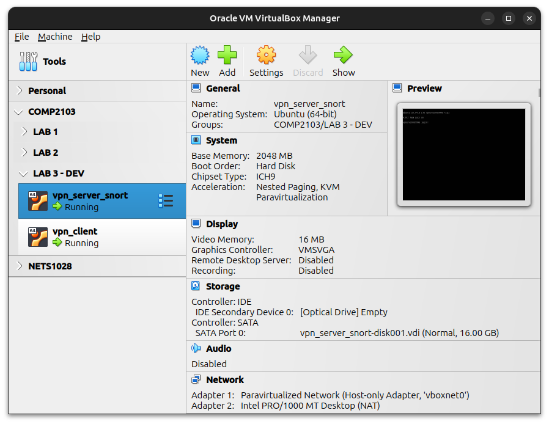
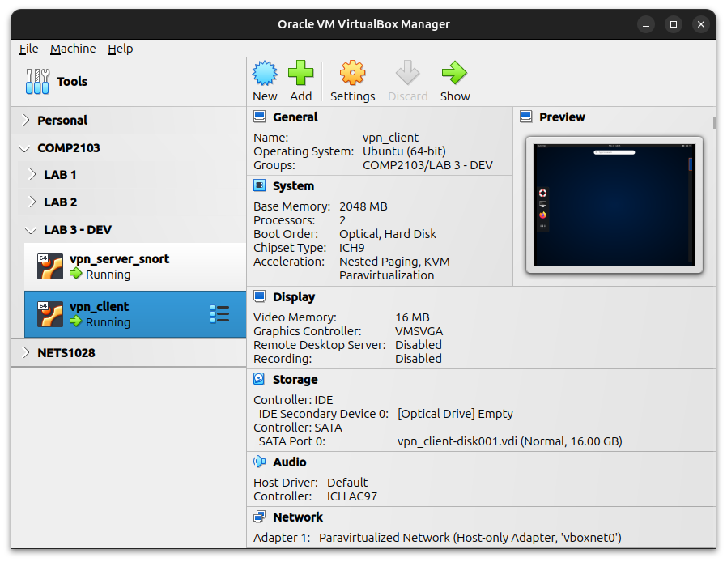

192.168.56.0/24: This is the network that is created by VirtualBox as the default host-only network. You should be using this network address.
iptables for packet forwarding, Wireguard VPN (using PiVPN) configurations, and Pi-Hole configurations.enp0s8192.168.56.0/24
enp0s3 is configured as Static IP: 192.168.56.10/24 via NetplanScreenshot of example configuration, including the Network Adapters:

wg0 interface) and the client connects to the server via Wireguard automatically. You should make sure that the server is booted and ready before starting the client.sudo privileges is provided for your use:Username: student Password: Password01
Username: student
Password: Password01ssh student@192.168.56.10 to make sure that the server is up and connected to the Internet.# for the server use vpnsrv<student_id> sudo hostnamectl set-hostname vpnsrv<student_id> # You must correct the hosts files and modify the hostname manually sudo nano /etc/hosts # correct the hostname for 127.0.1.1 (usually on line 2)
# for the server use vpnsrv<student_id>
sudo hostnamectl set-hostname vpnsrv<student_id>
# You must correct the hosts files and modify the hostname manually
sudo nano /etc/hosts
# correct the hostname for 127.0.1.1 (usually on line 2)# Update the list of available packages and upgrade your system sudo apt update && sudo apt upgrade -y && sudo pihole -up # remove old and un-needed packages to free up space sudo apt autoremove # remove old caches for outdated software sudo apt autoclean
# Update the list of available packages and upgrade your system
sudo apt update && sudo apt upgrade -y && sudo pihole -up
# remove old and un-needed packages to free up space
sudo apt autoremove
# remove old caches for outdated software
sudo apt autoclean192.168.56.0/24 network) set to DHCP192.168.56.10, this IP address is hard coded in the client Wireguard configuration file for wg0The following screenshot is the example configuration. Notice the network configuration where the NIC is connected to the same Host-Only network as the server:

A Linux account with sudo privileges is provided for your use:
Username: student Password: Password01
Username: student
Password: Password01# For the client use vpnclient<student_id> sudo hostnamectl set-hostname vpnclient<student_id> # You must correct the hosts files and modify the hostname manually sudo nano /etc/hosts # correct the hostname for 127.0.1.1 (usually on line 2)
# For the client use vpnclient<student_id>
sudo hostnamectl set-hostname vpnclient<student_id>
# You must correct the hosts files and modify the hostname manually
sudo nano /etc/hosts
# correct the hostname for 127.0.1.1 (usually on line 2)You can also update the server and the client if you wish using the following commands:
# Update the list of available packages and upgrade your system sudo apt update && sudo apt upgrade -y # remove old and un-needed packages to free up space sudo apt autoremove # remove old caches for outdated software sudo apt autoclean
# Update the list of available packages and upgrade your system
sudo apt update && sudo apt upgrade -y
# remove old and un-needed packages to free up space
sudo apt autoremove
# remove old caches for outdated software
sudo apt autocleanActivities at the top left corner of the screen.ping 1.1.1.1 should work from the client through the VPN connection.ip and wg commands in the terminal:ip address show sudo wg show
ip address show
sudo wg showTry navigating to the internet on the client. Firefox is already installed in the desktop environment on the client:
microsoft.com and bing.com. This should work.intel.com. This should also work.google.ca, google.com, ubuntu.com and apple.com. You should be having some problems reaching these sites.Troubleshoot why you cannot visit ubuntu.com on Firefox from the client only.
Tip: You can examine the SSL certificates in the browser. Additionally, you can use OpenSSL CLI to examine the website certificate as follows:
openssl s_client -servername ubuntu.com -connect ubuntu.com:443
Tip: Check the output of nslookup ubuntu.com, and dig ubuntu.com and compare the output to your host computer.
Tip: On the client VM you can check the resolver status using resolvectl status
Q1: What is the root cause of the Firefox browser preventing your access to Ubuntu.com on the client VM?
Q2: You may be able to bypass the displayed errors by "Accepting Risk" or other methods in Firefox on the client VM in order to visit Ubuntu.com. In this case, are the user information confidentiality and integrity preserved since the client is using VPN and HTTPS (TLS Encryption) to connect to Ubuntu.com anyway?
Q3: Does using a VPN in the current lab configuration preserve user information security and privacy from 3rd party snooping (for example your ISP) when the client VM is used for surfing the internet?
Q4: A popular method attackers use to steal user credentials is phishing. Attackers send phishing (and spear phishing) communications through email, instant messaging, and SMS, to redirect users to phishing websites. Phishing websites may (exactly) resemble legitimate websites and may fool users into entering their credentials. In which ways using HTTPS and TLS certificates can potentially prevent phishing attacks from succeeding?
In Part 1 you should have discovered the root cause of the issue, or at least have an idea of why some sites end up with SSL errors. Attempt to find a permanent solution.
You may already know how to scan the Server VM using nmap to find out what services are exposed, and what software is serving those services. You can use nmap from your host computer, or install it using sudo apt install nmap on the client VM and use CLI.
Tip: Did you notice a domain being pointed to the Server VM's local IP address in the results of your nmap scan?
Notice: You do not need to (do not) install any new packages on the server. Everything is already pre-installed and pre-configured!
sudo ss -tuln.Q5: What TCP services did you discover on the server when scanning remotely?
Q6: What domain name was revealed to resolve to the IP address of this server?
Q7: Why remote scanning and discovery of open UDP ports can be time-consuming?
Q8: What type of issue did you discover on the server that was causing ubuntu.com and some other sites to not function correctly?
Q9: What UDP port number is used by the client to initiate the Wireguard connection to the server?
Q10: is the Client VM sustaining Wireguard communicating on the same UDP port that is used to initiate the connection?
I have installed and enabled an open-source IDS solution called "snort" (see https://www.snort.org/). The server is already configured, so you should not need to modify any settings or configurations.
You are going to simply add your new rules in /etc/snort/rules/local.rules.
After adding your rules you have two options to start testing or applying the rules:
sudo snort -A console -q -i enp0s3 -c /etc/snort/rules/local.rulesctrl+C and then Ctrl+Zsudo service snort restart./var/log/snort/alert. You can simply monitor this file in real-time by having a second ssh session open and using tail -f /var/log/snort/alert.To test this you have been provided with an example rule:
# Here is an example: The following rule with log an alert if there are any # ICMP packets are detected anywhere. You can use # 'tail -f /var/log/snort/alert' and ping the server from your computer to see # what the alerts look like. alert icmp any any -> any any (msg: "ICMP detected";sid:1000001;rev:1;)
# Here is an example: The following rule with log an alert if there are any
# ICMP packets are detected anywhere. You can use
# 'tail -f /var/log/snort/alert' and ping the server from your computer to see
# what the alerts look like.
alert icmp any any -> any any (msg: "ICMP detected";sid:1000001;rev:1;)sid is just a unique number. Every rule rules must have a unique sid. The best practice is to start from 1,000,000 and above, in case you would like to import rulesets from other sources (in fact the documentation considers any sid less than 1000001 as "reserved").Snort has been around for a long time, there are many tutorials and demos available that you can find on the internet. The official documentation can be found at https://snort.org/documents#OfficialDocumentation.
Users manual and Snort rule infographic for a quick start.Here is a second example snort rule. Try it out by visiting www.facebook.com on the client and checking the logs on the server (you do not need to log in, just visit the domain).
alert tcp any any -> any any (content:"facebook.com"; msg:"Someone Is visiting facebook at this time"; sid:1000009; rev:1;)
alert tcp any any -> any any (content:"facebook.com"; msg:"Someone Is visiting facebook at this time"; sid:1000009; rev:1;) /admin pages./etc/snort/rules/local.rules file with your rule/admin page on the server is accessed. Make sure your server hostname is visible in the screenshot.To provide an additional layer of security configure the following:
ufw status command to show your active rules (make sure your hostname is visible)You can check out the tutorial by DigitalOcean at https://www.digitalocean.com/community/tutorials/ufw-essentials-common-firewall-rules-and-commands